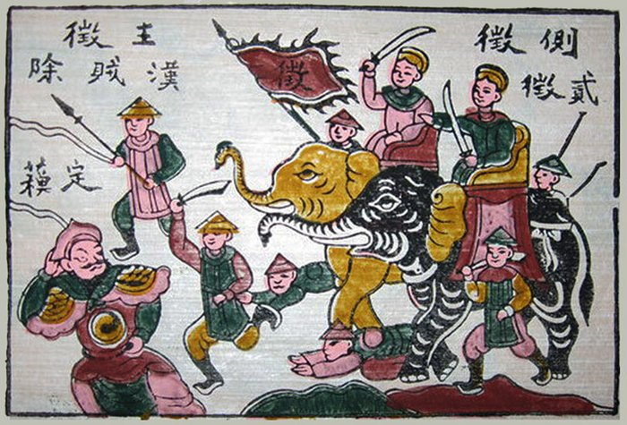

THE SISTERS' REBELLION
The rebellion was two sisters; it still is.

THE SISTERS' REBELLION
The rebellion was two sisters; it still is.
Feature map
Level-by-level features, as the figure refined them.
The Second Blade
bonus action, 3 CE
Tier IV · Paired-Blade Striker · Suggested CE ability: DEX · Primary verb: Answer.
Trưng Trắc manifests her sister's echo in an unoccupied space within 30 ft. The echo: AC 13 + PB, HP equal to 4 × her level (80 HP), speed 40 ft. On her bonus action, it may move up to its speed and make one melee attack: +PB + DEX to hit, 1d8 + DEX slashing. It lasts until destroyed or dismissed (no action). Resummoning costs 3 CE — or 1 CE while the Fallen Sister's Share is active (see L6). The echo will not strike the defenseless or the surrendered; if commanded to, it refuses — and Trưng Trắc takes 2d8 psychic damage, the pain of the only disagreement the sisters ever had. It is not a summon. It is not a shikigami. It is the answer, half a step behind.
The Answer
passive
The duet escalation — the heart of the technique: - When Trắc hits a creature, the echo's next attack against the same creature before her next turn has advantage. - When the echo hits a creature, Trắc's next attack against the same creature before her next turn deals +1d8 slashing. Against enemies fighting under an imperial banner — any empire, any dynasty, any conquest claiming the right of the strong — the escalation damage doubles: +2d8 instead of +1d8 (the Ma Yuan Protocol). The empire is always the target. The strikes answer each other. The rebellion accelerates.
Hát River's Refusal
reaction, 2 CE
When she or the echo fails a saving throw against being grappled, restrained, paralyzed, or stunned, reroll the save with advantage. Rather the river than the cage — they chose it once, and the technique remembers. Once per round.
Twin Rebellion
bonus action, 2 CE
She and the echo swap positions (both must be within 120 ft of each other). Until the start of her next turn, attacks against the echo have disadvantage — the empire can't tell which sister is which. The rebellion is wherever the empire isn't looking.
The Queen's Elephant
action, 4 CE
A 60-ft line, 10 ft wide: the war-elephants ride again, in cursed energy. Each creature in the line makes a STR save vs the technique DC — 4d8 bludgeoning damage and prone on failure, half damage and no prone on success. The citadels fell to this. So will the line.
The Fallen Sister's Share
passive
When the echo is destroyed, Trưng Trắc gains +2 to attack rolls and +1d8 damage until the end of her next turn — and for 1 minute, resummoning the echo costs 1 CE. The fallen sister's share, carried by the living. Once per short rest.
Sixty-Five Citadels
action, 8 CE, once per day
For 1 minute: she and the echo gain +2 AC and +2 to attack rolls — and whenever one of them hits with an attack, the other may immediately make one attack as a reaction against the same target. The duet at full tempo. The rebellion taking citadel after citadel, and the empire learning, again, that there were always two of them.
Maximum, Domain, or equivalent.
Capstone material.
Maximum: THE QUEEN'S ANSWER (action, 10 CE, once per long rest)
She and the echo strike as one against a single target within reach of both: each makes one attack with advantage. If both hit, the target takes an additional 8d8 slashing damage and must make a CON save vs the technique DC or be stunned until the end of its next turn. Two blades. One verdict. No appeal.
Domain Expansion: HÁT MÔN — WHERE THE SISTERS RULED (full-turn action, 20 CE)
60-ft enclosed Domain. 800 clash points · 5-round burnout · 2-minute duration (per zack's Tier IV bookkeeping). - Sure-hit: the rebellion is everywhere — she and the echo each make two attacks when they take the Attack action (the echo strikes twice on her bonus action), and enemies within have disadvantage on Wisdom saving throws. - The Domain does not compel, confine the mind, or unmake. It simply declares: here, the sisters ruled, and here, they rule again.
- Clash points
- 800
- Burnout
- 5 rounds
- Duration
- 2 minutes
- Radius
- 60-ft enclosed Domain
- Activation ✦
- full-turn action
- CE cost ✦
- 20
✦ Canon: figure Domains are Specific Domains — the stated profile governs, not the player point-unlock table.
THE RIVER'S VERDICT (passive)
The echo can no longer be permanently destroyed — when destroyed, it reforms at half HP at the start of her next turn. The river keeps both stories. And once per long rest: when Trưng Trắc drops to 0 HP, the echo catches her — she drops to 1 HP instead, and the echo takes the excess damage, even beyond its own HP. It breaks itself to hold her. It has always been willing. That was the promise.
Build-defining options.
Historical-figure techniques grant no feats — the figure's art is complete as written, and the builder's feat picker excludes these techniques. Take the progression as the build.
Edge cases and shared systems.
Campaign canon notes